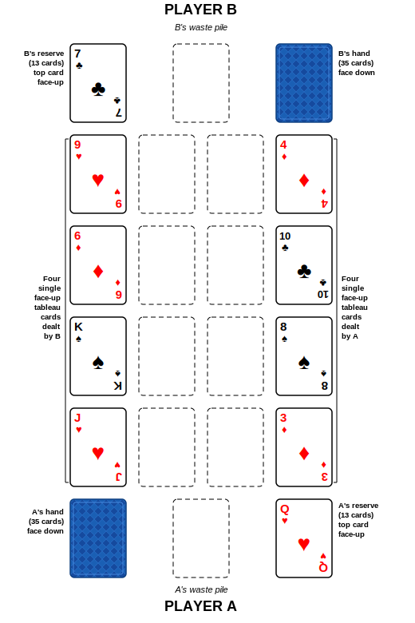

Zank-Patience rules
Introduction
Russian Bank is a competitive patience game for two players. It’s been known for more than 100 years under multiple names like Zank-Patience in the German book “Illustrirtes Buch der Patiencen, Breslau 1884/85” or Streitpatience and Schikanös–Patience. It is popular in France where it’s known as Crapette. It’s also played in multiple countries like North America or Britain where it’s named sometimes “Touch” or “Stop” because of its gameplay (when you make an illegal move, the opponent can call stop to prevent you from finishing your turn). In the Middle East it is known as Tonj, Tunj, Tonge or Tunge.
Players and Cards
This two-player game also needs two standard 52-card packs, one for each player. Usually people use decks with different backs because decks become mixed by playing cards on each other and you need to separate them for the next game.
Initial layout
Each player shuffles the other player’s pack then they exchange decks.
Each player deals from their own pack the reserve :
- a pile of 12 cards face hidden, with a 13th card face revealed on top. In general the player places this pile on their right.
Next each player deals the houses :
- 4 cards each face revealed in a column above the reserve, with no overlapping, starting with the position furthest away from the player. In total there are 8 houses (known as the tableau).
Leave between the 2 columns a space for at least 2 cards wide between them, it’ll be for the 8 foundation piles that go from Ace to King. The 8 houses of the tableau as well as the 8 foundations belong to both players and can be used by anyone.
The remaining cards (35) known as the hand (or the draw pile), are placed on each player’s left face hidden. You should have a symmetrical layout as shown below. Between the hand and reserve is the waste pile where a player will play a card there to signify ending their turn.

Be sure of how you name your piles and stick with it, the same term can be used for a different pile depending on where on earth you play this game :
- The reserve can also be called the stock or the crapette.
- The hand can also be called the stock, the talon or the draw pile.
- The waste pile can also be called the discard pile or talon.
- The foundation piles are also known as centre piles.
Objective
The objective is to be the first player to get rid of all the cards from your personal piles : your hand, waste and reserve piles. This is achieved by loading them to the foundations or tableau, or on your opponent’s reserve and waste piles.
Play
The first player is the one with the lowest card from the top of their reserve (from lowest (ace) to highest (king)). If they are equal in rank then they compare the house cards, starting from the closest to their reserve. The game is played turn by turn until a player wins by having no cards in their reserve, waste or hand, or until the game reaches a stalemate if both players find that no more plays are possible.
A player can move cards around the layout according to strict rules. Cards are taken one by one if they are considered available and placed onto a house of the tableau, a foundation pile or an opponent’s reserve or waste pile, according to the building rules. You have to play according to certain priorities because certain moves are compulsory.
You can play for as long as you wish until you have no other option than to play on your waste pile or if the opponent stops you because you made an error.
Available cards
When it’s your turn, the following cards are considered available:
- the revealed top card of your reserve;
- the outermost (or lowest value) card in each of the eight houses of the tableau.
(When cards are added to the tableau, the cards in each house are overlapped in a row extending away from the foundation piles, as shown in the diagram below. The available outermost card of a house is therefore the card most recently added to that house, the only one which is not partially covered.)
Cards can become available later :
- After playing the top card of your reserve, the next card of your reserve is immediately turned up, making it available. (When there is no card left in your reserve, it remains empty until the end of the game)
- If you have no compulsory move to make, you can turn up the top card of your hand. You can play as long as possible before turning up your top hand as long as there are legal moves, but eventually you’ll have to turn up the top card of your hand making it available. After you have played your hand card and made any compulsory moves that become possible as a result of playing it, you may turn up your next hand card. If you can’t play your turned up hand card or don’t want to, you place it on your waste pile, ending your turn. Cards placed on your waste pile are no longer available for you to play. However, if it was a card that you were required to play according to the priorities and compulsory moves (i.e. if it fits on one of the foundation piles) your opponent could force you to play it there instead of on your waste pile before he starts his turn.
- If your hand is empty and you need a card, you turn your waste pile over, without shuffling the cards in it, and place the stack face-down to the left to form your new hand. You can then resume playing by turning the top card of this new hand. You are not allowed to turn your waste pile over to make a new hand until you actually need a card from the hand because your opponent is allowed to load cards onto your waste pile during his turn.
Building Rules
Available cards can be played one at a time to any of the eight foundation piles, any of the eight houses of the tableau, or to the opponent’s reserve or waste pile, provided that the following building rules are respected, and subject to the priorities and compulsory moves described later:
- Foundations: an empty foundation space can only be filled by an available Ace. Once the ace is played you can add cards of the same suit in ascending order from 2 to K (23456789TJQK). e.g. you can only place the 6 of hearts onto a 5 of hearts. Once the king is reached the pile is locked, usually indicated by flipping the king face down.
- Houses: the cards are built in descending sequence with alternating colours. e.g. you can only place a black 9 on a red 10. Cards are overlapped slightly so that the whole sequence can be seen (see image below). If the house is empty you can play any available card on it.
- Reserve and waste pile: you can “load” your opponent’s reserve and waste pile by adding a card of the same suit as the exposed card, of the next higher or next lower rank (+/- 1 rank difference). e.g. if the top card of your opponent’s reserve is an 8 of clubs you can place either an available 9 of clubs or a 7 of clubs. You can load as many cards as are available (e.g. you load a 7 of clubs, then the 6 of clubs then another 7 of clubs and so on)
Priorities and Compulsory Moves
Certain moves are compulsory, and if multiple moves are available you must follow certain priorities :
-
(#1 Priority) Reserve to foundation, you must make this move before any other.
-
(#2 Priority) Any available card to foundation move is compulsory to make. If there are several available cards (other than your reserve card) that can be played to foundations, you may choose which to play first.
-
(#3 Priority) Any playable card from your reserve to an empty house, you have to fill any empty house with your reserve before you are allowed to turn a card from your hand.
If you don’t play following the above priority rules, or if you don’t make a compulsory move, or any kind of illegal move (such as a violation of the building rules), your opponent may call “Stop!” and explain what you have done wrong.
- If you made an illegal move it has to be undone first before losing your turn in favor of your opponent’s.
- If you missed a compulsory move, your move has to be undone, the compulsory move is done instead and you lose your turn.
In summary your opponent can call “Stop!” when:
- You move any card or turn your hand card when the top card of your reserve could have been played to a foundation.
- You move any card or turn your hand card when there is an available card that could have been played to a foundation.
- You turn your hand card instead of playing your reserve on a house
- You try to move a card to an incorrect pile not following building rules (e.g. you don’t alternate color on a house).
- You try to move a card that is not available (e.g. the top of your waste pile).
Notes:
-
Unlike some Solitaire (Patience) games, you are not allowed to move a group of cards from one house of the tableau to another, you can only pick cards one by one. You can use empty houses to rearrange piles as long as you don’t omit compulsory or top priority moves when picking the cards one by one.
- When playing there is no distinction between the cards from the two packs, their only purpose is to make sure each player plays with a complete deck.
- You can’t move cards from your own waste (except in some variants) or your opponent’s piles (hand, waste, reserve).
- Cards in foundations can’t be played anymore.
- You can’t move a card to each other’s hands or your own reserve.
- You can only move a card to your own waste pile from your hand (e.g. you can’t take a card from a house to load your waste pile)
End of the Game; Scoring
The first to play all his cards (hand, reserve, waste) wins and the game is over. You earn 30 points for winning the game, 1 point for each card left in your opponent’s hand and waste piles, and 2 points for each card left in your opponent’s reserve.
If there is a stalemate, there is no 30 point bonus. Each player counts their remaining cards (1 point for each card left in the hand or waste pile, 2 points for each card left in the reserve) and the lowest count scores the difference between the counts of the two players. (e.g. player A has 12 and player B has 20, player A scores 8)
After each game, separate and shuffle the decks to prepare for the next one.
The first player to reach the target score at the end of a game wins the match
Variations
-
The top card of your waste pile is available, you can play it on a foundation pile, a house or on your opponent’s piles
-
You can adjust the size of the reserve (11 or 12 cards instead of 13) and have bigger hands in consequence.
- Variations on who begins first :
- You cut your deck before dealing and use that card to decide (lower begins in general)
- Higher reserve card wins (Ace is considered the top (AKQJT98765432)) if the ranks are equal you use the suits in descending order: spades, hearts, diamonds, clubs.
- Use only the tableau cards and not the reserve to decide.
- If you play multiple games the player that started first lets the other start the next game.
- Stricter priority rules :
- Available cards must be played to the centre, it’s also compulsory to release cards that could finish in a foundation by shuffling cards around to make them available, failing to see that opportunity is a foul.
- If you can’t play to a foundation it’s compulsory to play on your opponent’s piles (waste or reserve) when possible.
- It’s a foul if you turn your hand card when you could create a space in the tableau.
- Tableau variant When laying out the tableaux each player places a card in each of their 4 houses face hidden, then deals a card with its face visible overlapping the hidden card. When the face down card is exposed by removing the visible card that was on top of it, you can flip the hidden card. The 3 rules above are used plus another one :
- When you can’t play on foundations the player must try to play to uncover the remaining hidden cards
-
There are even stricter rules like a harder rule 1 : if you can release a card from the tableau it must be done with as few moves as possible.
-
There are less strict rules, for instance you can turn your hand card right at the start of your turn, or look at it while your opponent is still playing.
-
Your reserve cards are hidden at start until any possible move is made, then you can flip your reserve card and usual rules apply.
-
Some people allow to move piles of cards from the house altogether as long as they form a descending sequence, usually when playing like that you can’t pick single cards from piles in houses anymore (except to move them to foundations)
-
Simplified Variant: Instead of 2 decks, just 1 standard 52-card deck is needed. One player plays with the hearts and clubs, and the other with the spades and diamonds. Reduced houses from 4 to 3 each. The size of the hand and the reserve is reduced but not specified; Günther Senst suggests a reserve of 5 cards and a hand of 17 cards.
- Three-player Game: 2 standard 52-card packs plus one joker are used and shuffled together. Each player receives 35 cards to build their reserve and three houses. The size of the reserve and hand are not specified, some people use 8 cards for the reserves and 24 cards for the hands. The first house to be emptied is simply removed from the game, so that the rest of the game is played like a two player game with 8 houses (but a third player with its own waste, reserve and hand). The joker is simply set aside when appearing.
Check out my other games